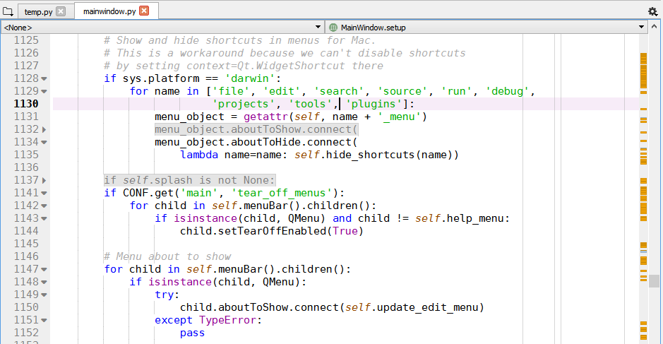
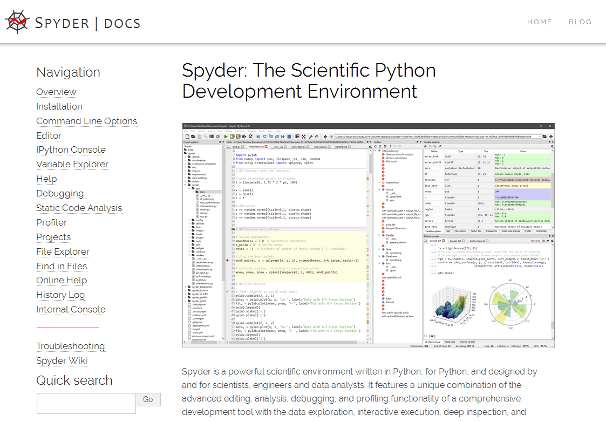

State of the Spyder, Part 2: Looking up
After sharing some major milestones, development progress, and other tidbits from the past six months in Part 1 of this series (check that one out first if you haven’t already), we now have some amazing news to share with you all here in Part 2, along with other status updates. That’s not all, though—Part 3 will look ahead toward Spyder 4 and beyond, unveiling and explaining our full roadmap and going over the future possibilities even further afield.
Spyder Wins NumFOCUS Development Grant
First up, we’re thrilled to announce a major part of what’s making that plan possible (along with your support, of course!). This May, Spyder was awarded a $3000 development grant from NumFOCUS, an organization promoting better science through open code, to help with finishing Spyder 4! NumFOCUS is a nonprofit dedicated to supporting key scientific computing projects; promoting sustainability in the open source ecosystem; educating the next generation of scientists, engineers, developers and data analysts through their flagship PyData program; and enabling and inspiring the next generation through their grants, scholarships and fellowships, diversity and inclusion program, and involvement in the Google Summer of Code.
We applied for the funding back in March of this year, along with many other scientific Python projects, and were one of the fortunate projects selected after the review process. The award runs from May through this November, and will enable multiple betas with new features to be released throughout 2018, with the first feature-complete release candidate of Spyder 4 planned by the year’s end (we’ll have more detail on all that in Part 3). Check out our bio and the other projects that were funded over on the NumFOCUS announcement, and make sure to thank and support them if you get the chance.
Quansight Hires Spyder Maintainer; Helps Fund Development
Equally exciting, Spyder’s maintainer, Carlos Cordoba, was recently hired by Quansight, the brand-new company headed by scientific Python luminary Travis Oliphant! The father of much of the modern PyData ecosystem including NumPy, SciPy and Numba, Travis has been instrumental in the dramatic growth of open-source data analysis with Python through founding or helping lead Enthought, Continuum/Anaconda, NumFOCUS, and more. Quansight, Travis’ newest venture, focuses on scaling up the PyData ecosystem to solve even larger and more integrated problems, connecting companies with the open-source tools that can benefit their business, and helping build a more robust ecosystem for open-source scientific development.
As part of that mission, Carlos was hired through at least the end of 2018 to help make several open-source projects more sustainable in the long run, and I’m sure you all will be happy to hear that one of them will be our very own Spyder! After previously helping support the project over at Anaconda, Travis and Quansight will fund Carlos to work part-time on Spyder development, helping the project continue to grow and evolve, and keeping Spyder 4 moving along at a faster pace. Congratulations Carlos, and thanks to Travis and Quansight!
Aside from those two, we also have several other potential long-term funding opportunities in the pipeline. Stay tuned to hear more about those in the coming months.
Spyder 3.3.0 Ready to Go
Meanwhile, on the development side of things, we’ve just finished the rollout of the next update in the stable Spyder 3 line, 3.3.0, and will have a full post shortly going over the changes and enhancements in detail.
In brief, it has some significant under the hood revisions, cleaning house of some old end of life dependencies and legacy support (Python 3.3 and PyQt4 below 5.5), and separates the IPython Console kernel code into a new spyder-kernels package to make it easier for you to work with different Python environments and remote sessions, and easier for us to add exciting new features down the road.
Additionally, it adds new preferences options for console plotting and autocompletion, improves the usability and performance of Variable Explorer object viewers, includes a new, fully automated error reporting feature to make submitting reports faster, easier and more helpful, and contains a number of other minor improvements and usability enhancements, along with numerous bug fixes.

Spyder 4 Public Beta 1 on Deck
We’ll also be releasing the first public beta of Spyder 4 in the very near future, to allow users and developers to get their hands on the next generation of the IDE and start using and testing it as soon as possible. There are far too many significant new features to list here, and they are more than worthy of their own full-length post, as there are many substantial changes to the Editor, Console, Variable Explorer, File Explorer, Outline Explorer, API and more.
Some of the major highlights in the Editor include code folding, indentation guides, multiple line length indicators, a live class/method/function panel (a la Visual Studio), many more shortcut commands, better comment/uncomment, and more. The IPython Console gains the ability to start specialized Pylab, SymPy, and Cython consoles, and the Variable Explorer gets MultiIndex support, now natively handles all Pandas indexers, and can display sets in a dedicated GUI editor. Meanwhile, the File Explorer now has multi-select functionality and can open any file with the user’s OS-configured external default program, while the outline explorer can now group items by cell, and in multiple levels. Finally, Spyder 4 exposes a public API for external plugins, offers more language translations, features several global UI improvements and has numerous under the hood and refactoring changes, and countless other enhancements big and small. It’s the future of Spyder, so if you’d like to get a taste of the cutting edge, we’d love for you to try it when it drops and let us know what you think!
Spyder Documentation, Reborn
Aside from Spyder 3 and 4, we’ve got another big ticket item for you all in the next few days: our brand new docs! We’ve been working on a major overhaul of our documentation, which will saw its first official release with Spyder 3.3.0. Our old docs were hosted on PyPI/PythonHosted and, with the freezing of that service, couldn’t be updated. Therefore, we’ve now moved to maintain them in a new dedicated repo, build, deploy and host them ourselves with Sphinx, doctr and Github Pages on a subdomain of our new site making them more convenient, responsive and accessible.
Furthermore, we’ve taken the opportunity to perform a comprehensive overhaul from top to bottom, dramatically improving their usefulness to users. We’ve greatly expanded many pages and sections and adding new ones, updated outdated references, performed an exhaustive copyedit over nearly every line of the text, developed and implemented a consistent style guide, transitioned to a modern theme with our own custom CSS extensions, added or replaced many dozens of high-resolution screenshots, modified the source code and infrastructure to be easier to develop, build and maintain, and much more. Even better, you can expect even more improvements in the coming months, as we further expand them toward the standard you’d expect for a feature-rich, multifaceted application like Spyder. If you find an issue with them, see a section that could use expansion or improvement or even just have general actionable feedback feel free to open an issue or send us a pull request on our new repo. We’ll have more information about what’s new and our future plans when we officially release them shortly.
More News and Notes
Finally, we want to make sure you all can stay better informed of Spyder-related happenings going forward, as well as get the chance to interact directly with the Spyder team.
We’re planning on much more frequent announcements, status reports, news, and tutorials right here on our blog, as well as more timely updates on our social media, including our Facebook page and Twitter account. Make sure to subscribe/follow if you’d like to stay up to date or want to get in touch; we only post important happenings, so we won’t inundate your feeds with trivialities. You can also reach us on our Google Groups discussion board, our Gitter live chat, or post a comment right here below this post.
Thanks again for all you do to make Spyder possible, and keep a look out for the next post in this series on the future of Spyder, along with our three major releases (3.3.0, 4.0b1, and the new docs) over the next few weeks. Happy Spydering!